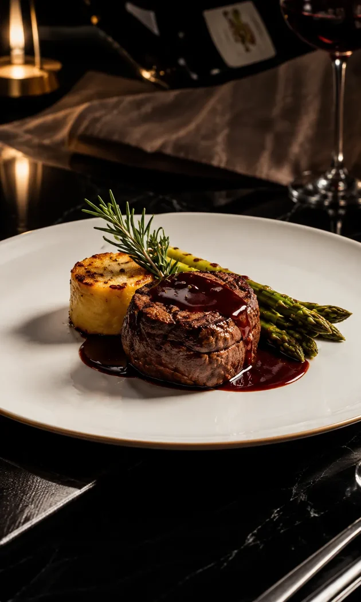
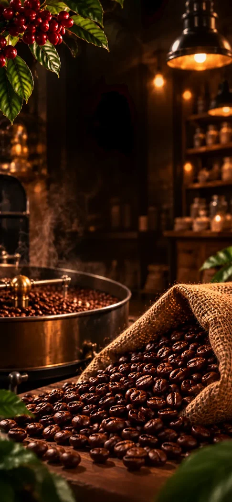
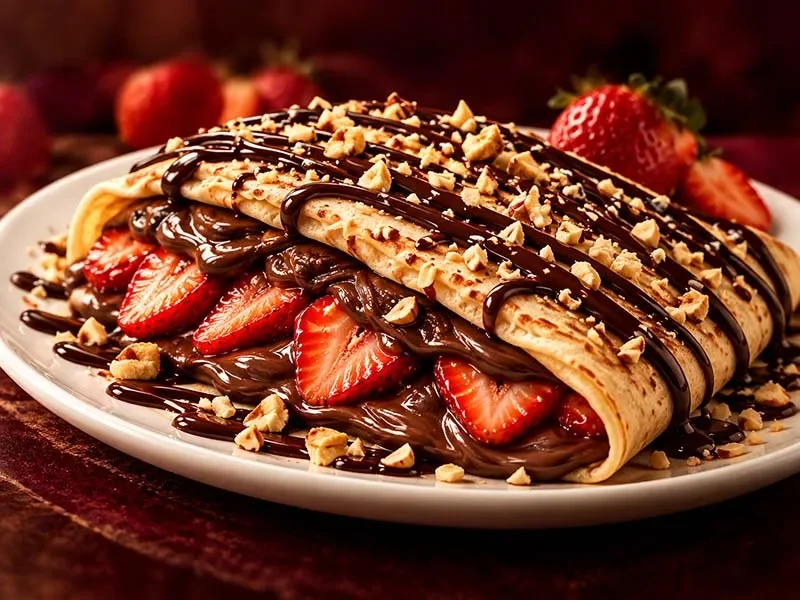
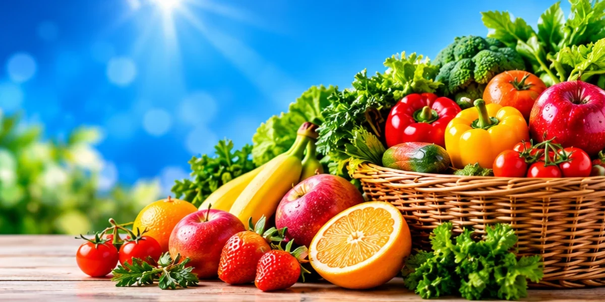
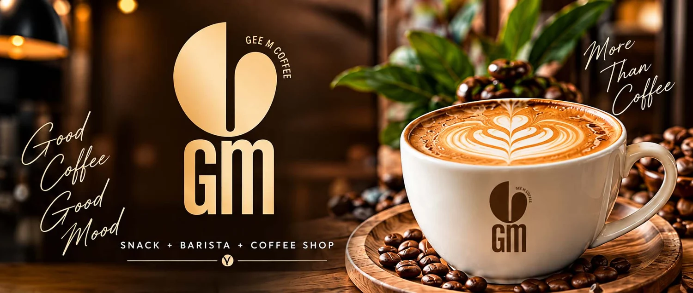

Restaurant
LIWAN Restaurant
A restaurant website that introduces the dining experience and gives guests a direct route to the menu.
Independent web studio
Digital menus, online catalogs and storefronts that make it easy for customers to explore what you offer.

Client portfolio
Explore the live sites or read how each project is organized for its customers.

A restaurant website that introduces the dining experience and gives guests a direct route to the menu.
A beauty storefront with category-led browsing and distinct paths for shoppers, consultants and wholesale customers.

A photo-led dessert menu with separate sections for crêpes, waffles and mini pancakes.

An Arabic-first catalog for everyday shopping, from fresh produce and groceries to stationery and cleaning products.

About the studio
Almstafid WebSuite develops websites and digital menus for local businesses. Restaurant and café projects help visitors find menu categories quickly, while storefronts organize product ranges so customers can explore before getting in touch.
Each project keeps its own visual identity. The portfolio brings them together and explains the choices behind their menus, categories and browsing flows.
Contact
Tell us about your business and the website you need.